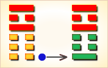
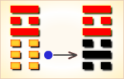
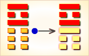
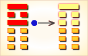
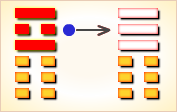
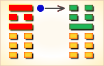

周易第35卦_晋卦(火地晋)_离上坤下
如有疑问互相交流，微信：470283584
周易第35卦详解
晋卦原文
晋。康侯用锡马蕃庶，昼日三接。
象曰：明出地上，晋。君子以自昭明德。
白话文解释
晋卦：康侯用成王赐予的良马来繁殖马匹，一天多次配种。
《象辞》说：“本卦上卦为离，离为日；下卦为坤，坤为地。太阳照大地，万物沐光辉”，是晋卦的卦象。君子观此卦象，从而光大自身的光明之德。
《断易天机》解
晋卦离上坤下，为乾宫游魂卦。晋取前进、晋见、晋升之意，上离下坤，为太阳普照大地，万物和顺之象，多主吉。
北宋易学家邵雍解
日出地上，万物进展；赏赐隆重，百谋皆遂。
得此卦者，如旭日东升，气运旺盛，收入颇丰，谋事可成，百事如意。
台湾国学大儒傅佩荣解
时运：好运新来，步步高升。
财运：光亮之业，最有利润。
家宅：阳光之屋。
身体：自知之明。
传统解卦
这个卦是异卦（下坤上离）相叠。离为日，为光明；坤为地。太阳高悬，普照大地，大地卑顺，万物生长，光明磊落，柔进上行，喻事业蒸蒸日上。
大象：日出地面，普照大地，有光明上进之象。
运势：事业、名望、财运皆吉，所谓有加官晋爵之兆。
事业：顺利。应遵守正道，迎难而上，克敌制胜，因势利导。树立良好的人际关系，深得人心。全力以赴，不得有丝毫犹豫不决，更忌优柔寡断，而应败不馁，勇往直前。注意和衷共济，共同前进。
经商：行情好，市场竞争顺利。但也会遇到一些困难，要迎难而上，因势利导，克敌制胜，争取众人支持。前进中的挫折不可免，只要动机纯正，必可转危为安。
求名：经过刻苦努力与奋斗，已具备开拓事业的基础，却因无人引荐，暂时不得志，决不可因此自暴自弃，须耐心等待时机。同时，更加积极地创造条件。
婚恋：吉星高照。会有理想的结果，但决不可自恃条件优越而抱无所谓的态度或过于挑剔。
决策：处于不断上升的形势，不会有过大的阻力。但务必争取众人信任，获取人心，再接再厉，只要动机纯正，克服侥幸心理，必有喜从天降。
台湾张铭仁解卦
晋：表示进取也，主吉象。火为太阳，所以是「日出于大地、光明乍现」，阳光准备要照耀大地，一片欣欣向荣之象。事业投资、升迁、婚姻、感情均是有雨过天晴，奋发向上的吉象。
解释：很明白，很明亮。
特性：荣誉心重，固执，爱面子，外华内虚，喜领导他人。
运势：事业繁荣，声誉渐高，于人、事、物均获宏利之际，与人共事者吉。但要知进德虚怀，即是诸凡对人、事宜谨守德操，不可傲溢心怀，否则有破象也。但财运旺。
家运：虽如日中天，切不可过于骄纵、蛮横，若为人不行正道，虽然光明就在眼前，且兴隆幸福，又难免夫妇失和，家运不振。
疾病：久病者凶，近病无妨，注意胃肠、心脏之疾。
胎孕：平。
子女：多才智，聪明而贤孝。
周转：可获得强大资金。
买卖：进取得利，并获得巨财。
等人：女者会来，男者不一定会来。
寻人：见于西南方或南方。
失物：动作快，可以寻回来。似是在地上的箱子之类藏着。
外出：克服犹豫心理，大胆前进，可无往而不顺。
考试：科甲登榜。
诉讼：最终能圆满解决。
求事：受人提拔，可有成就。
改行：可行。
开业：吉利。
周易第35卦初六爻详解
初六爻辞
初六。晋如，摧如，贞吉。罔孚，裕，无咎。
象曰：晋如摧如，独行正也。裕无咎，未受命也。
白话文解释
初六：攻击敌人，打垮敌人，卜问得吉兆。胜利之师没有捕捉俘虏，没有抢掠财物，不会有灾难。
《象辞》说：攻击敌人，打垮敌人，这是因为将帅能遵循正道，所以取得了胜利。从容部署，克敌制胜，没有灾难，说明将帅能因势制宜，独断于心。
北宋易学家邵雍解
平：得此爻者，忧愁参半，静则吉，动则凶。做官的不宜进取，须防流言。
台湾国学大儒傅佩荣解
时运：耐心等待，不必急进。
财运：稍待时日，可获大利。
家宅：吉屋可居；婚姻缓成。
身体：宽心解怀。
初六变卦

初六爻动变得周易第21卦：火雷噬。这个卦是异卦（下震上离）相叠。离为阴卦；震为阳卦。阴阳相交，咬碎硬物，喻恩威并施，宽严结合，刚柔相济。噬嗑为上下颚咬合，咀嚼。
周易第35卦六二爻详解
六二爻辞
六二。晋如，愁如，贞吉。受兹介福，于其王母。
象曰：受之介福，以中正也。
白话文解释
六二：攻击敌人，压倒敌人，卜问得吉兆。因为得到了先祖母的庇佑获得大福。
《象辞》说：之所以受此大福，因为六二之爻居下卦中位，像人得中正之道。
北宋易学家邵雍解
吉：得此爻者，求谋称意，多得母亲扶助，或得妻财。做官的守正者会进取。
台湾国学大儒傅佩荣解
时运：所求多阻，守正必亨。
财运：守住低潮，自然受福。
家宅：迁居与老人同住；婚姻稍待。
身体：多听老人言。
六二变卦

六二爻动变得周易第64卦：火水未济。这个卦是异卦（下坎上离）相叠。离为火，坎为水。火上水下，火势压倒水势，救火大功未成，故称未济。《周易》以乾坤二卦为始，以既济、未济二卦为终，充分反映了变化发展的思想。
周易第35卦六三爻详解
六三爻辞
六三。众允，悔亡。
象曰：众允之，志上行也。
白话文解释
六三：万众一心，全力进攻，无所悔恨。
《象辞》说：众人信任，其志向就会实现。
北宋易学家邵雍解
平：得此爻者，得朋友之助，营谋遂意，但谨防意外之险。做官的有升迁之机。
台湾国学大儒傅佩荣解
时运：众人悦服，自无懊恼。
财运：双方和睦，买卖皆利。
家宅：气氛和谐；两性融洽。
身体：团体运动；讼事调解。
六三变卦

六三爻动变得周易第56卦：火山旅。这个卦是异卦（下艮上离）相叠。此卦与丰卦相反，互为“综卦”。山中燃火，烧而不止，火势不停地向前蔓延，如同途中行人，急于赶路。因而称旅卦。
周易第35卦九四爻详解
九四爻辞
九四。晋如鼫鼠，贞厉。
象曰：鼫鼠贞厉，位不当也。
白话文解释
九四：攻击敌人而胆小如鼠，卜问得凶兆。
《象辞》说：攻击敌人而胆小如鼠，卜问得凶兆，因为九四阳爻而居阴位，像人处于不利的地位。
北宋易学家邵雍解
凶：得此爻者，时运不佳，或有争诉。做官的不宜进取，有阻力，须守正。
台湾国学大儒傅佩荣解
时运：守正为宜，耍诈必凶。
财运：贪财必败，见好就收。
家宅：耗失过多；婚姻不正。
身体：疥疮或呕血，皆危。
九四变卦

九四爻动变得周易第23卦：山地剥。这个卦是异卦（下坤上艮）相叠。五阴在下，一阳在上，阴盛而阳孤；高山附于地。二者都是剥落象，故为“剥卦”。此卦阴盛阳衰，喻小人得势，君子困顿，事业败坏。
周易第35卦六五爻详解
六五爻辞
六五。悔亡，失得勿恤，往吉，无不利。
象曰：失得勿恤，往有庆也。
白话文解释
六五：无所悔恨，吃了败仗，不要气馁。只要再接再厉，终必转败为胜。无所不利。
《象辞》说：受到挫失，不要气馁，勇往直前，定有喜庆降临。
北宋易学家邵雍解
吉：得此爻者，好运到来，营谋获利。做官的有升迁之喜。
台湾国学大儒傅佩荣解
时运：灾去福来，无意得之。
财运：前有小失，今可大得。
家宅：屋运转好；婚姻吉祥。
身体：已无大碍。
六五变卦

六五爻动变得周易第12卦：天地否。这个卦是异卦（下坤上乾）相叠，其结构同泰卦相反，系阳气上升，阴气下降，天地不交，万物不通。它们彼此为“综卦”，表明泰极而否，否极泰来，互为因果。
周易第35卦上九爻详解
上九爻辞
上九。晋其角，维用伐邑，厉吉无咎，贞吝。
象曰：维用伐邑，道未光也。
白话文解释
上九：攻击敌人，必须较量敌我双方的力量，可以考虑攻击敌人的城邑。但其结局难料：或许危险，或许吉利，或许没有灾难，或许正践凶兆。
《象辞》说：考虑到攻击敌人的城邑，这说明王道未能广泛实行，以致属邑叛乱。
北宋易学家邵雍解
平：得此爻者，有修屋宇之喜，不良者有争诉之忧。做官的有食邑之荣。
台湾国学大儒傅佩荣解
时运：好运将终，防有事故。
财运：同业纷争，幸可无咎。
家宅：邻里不安；始争终和。
身体：保养头部；罢讼为吉。
上九变卦

上九爻动变得周易第16卦：雷地豫。这个卦是异卦（下坤上震）相叠，坤为地，为顺；震为雷，为动。雷依时出，预示大地回春。因顺而动，和乐之源。此卦与谦卦互为综卦，交互作用。